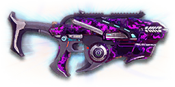

← Back to the Skorpios comparison
Sage Guide · Vanu Sovereignty · Submachine Gun
The reward for completing the Master Submachine Guns directive: an Eridani SX5 that trades its magazine for a heat gauge and hides a Vented Power Core in the frame. Usable by every class except MAX; this page teaches you to win fights with it today.
The one-line verdict: The Vanu SMG that reaches further than the rest: full 143 damage out to 10 m, the tightest hipfire in the class, and a heat gauge instead of a magazine. The price is the gauge: 25 shots, then you cool it or it stops you — and the recoil climbs at a harsher 25° angle. Fight inside 20 metres and make them count.

The Skorpios · Vanu Sovereignty · Auraxium directive reward · 25-shot heat gauge
Every enemy infantry has 1,000 health (500 shield + 500 health). Your bullet does 143 damage up close, fading to 91 at long range. Headshots count double, leg shots count less (×0.9). That gives you three numbers worth memorising:
| Range | Damage | Head | Chest | Legs | Chest vs shielded Heavy |
|---|---|---|---|---|---|
| Close · 0–10 m | 143 | 4 | 7 | 8 | 11 |
| Mid · 11–27 m | 143→114 | 5 | 9 | 10 | 13 |
| Far · 28–40 m+ | 112→91 | 6 | 11 | 13 | 16 |
Perfect-accuracy times to kill: 4 headshots ≈ 0.24 s, 7 chest shots ≈ 0.48 s up close. In real fights you'll land maybe half your rounds — still, this is why the head matters so much on this gun.
Full power to 10 m, then a steady slide to minimum at 40 m. The teal line shows Soft Point Ammunition, which stretches full power to 15 m. Past 28 m the kill costs 10 chest shots or more.
One gun, four fighting styles. The right technique changes with distance — use the range finder below to see what your bullets do at any range, then learn the four bands underneath it.
How to fight hereAim down sights at the upper chest and neck. Fire in bursts of 5 — your recoil climbs into the head for free damage.
Aim: centre of the chest, from the hip. Keep moving.
Scoping in costs you time and drops your speed to 0.75× — at arm's length that gets you killed. SMGs have the tightest hipfire of any weapon class. Strafe side to side (A/D) while firing so you're hard to track.
Aim: neck / upper chest. Bursts of 5–8 rounds.
This is where the gun earns its keep: full 143 damage to 10 m, still 129 at 18 m, mild recoil, fast handling. Start your crosshair at the neck — the natural upward climb walks your shots into the head, and 4 head hits end the fight in 0.24 s. Strafe while scoped; at 0.75× you move faster aimed than a scoped Heavy, and a moving target still beats a still one.
Aim: chest. Bursts of 5 rounds, pause between them.
Damage is sliding from ~126 toward 91 and your cone of fire blooms if you hold the trigger. Fire a burst, release for a split second to let accuracy reset, fire again. The recoil drifts up and to the right (25° angle), so pull your mouse gently down and to the left. Crouch or stand still when you can — both tighten your shots.
Aim: chest. Taps of 3–5 rounds at exposed targets only.
At 91 damage you need 11 chest hits — a long, loud advertisement of your position. Take these shots at stationary or fleeing targets, medics reviving, and engineers on turrets. Otherwise, your better play is to close the distance behind cover. Knowing when not to shoot is a skill too.
Your accuracy is decided by two things before skill even enters it: what your body is doing (your stance sets the starting cone of fire) and what your finger is doing (holding the trigger grows that cone with every shot). The Skorpios has no fire-mode switch — full-auto only — so "firing modes" are something you do with your finger, not a setting on the gun. And then there is the third thing no other Eridani has: the heat gauge.
| Stance | Starting cone | What it means for you |
|---|---|---|
| Sprinting | 7.0° | Maxed out — the widest the cone can be. Never start firing from a sprint. |
| Hipfire, moving | 1.5° | Walking or strafing from the hip. Fine inside ~8 m, leaks rounds past the target beyond it. |
| Hipfire, standing | 1.0° | Your point-blank default. The 0.14 m ring at 8 m in section 04 is this stance drawn out. |
| Hipfire, crouched | 1.0° | The tightest hipfire you have (1.25° if you crouch-walk). Crouch when holding a doorway from the hip. |
| Aimed (ADS), feet planted | 0.30° | Standing or crouched makes no difference here — about three times tighter than hipfire. This is the stance to fight from past 8 m. |
| Aimed (ADS), strafing | 0.30° | The moving floor — the same as standing still, so strafing costs you nothing in cone size on this gun. You still move at 0.75× while scoped, faster than most guns' 0.5×. Strafe between bursts to stay hard to hit; plant your feet during each burst. |
| Mode | How your finger does it | Use it at |
|---|---|---|
| The mag dump | Hold the trigger and don't let go | Point blank only, or suppressing a doorway. Bloom maxes out fast — past ~8 rounds you're spraying, not aiming, and you'll burn the whole 25-shot gauge in 2.0 seconds. |
| Bursts — the default | Hold for 5 rounds, release ~0.15 s, hold again. 6–8 rounds is fine while you're learning | Almost everything, 8–40 m. Each release resets the cone, so every burst starts at 0.30°. |
| Tap-fire | Short taps of 3–5, or single clicks, with a real pause between | 40 m and out, at exposed or stationary targets. Slow, but every round goes where the dot is. |
Here is what makes the Skorpios different from the Eridani it is built from. There is no magazine and no reserve ammo. Every shot pours heat into a gauge; stop shooting and the gauge drains on its own. You never reload because you are empty — you manage heat because the gun will stop you if you don't.
| Heat number | Value | What it means |
|---|---|---|
| Shots before overheat | 25 | One full gauge of fire — 2.0 seconds held down. Census data: 999 heat capacity at 40 heat per shot, so 24 shots leave you just short of the line and the 25th crosses it. |
| Cooling delay | 0.28 s | After your last shot, the gauge sits for just over a quarter of a second before it starts draining. |
| Cooling rate | 286 / s | About 7 shots' worth of heat per second. A 7-shot kill (280 heat) is fully cooled in ~1.3 seconds; a 20-shot burst (800 heat) in ~3.1 seconds. |
| Overheat penalty | 1.74 s | Fire the shot that fills the gauge and the gun locks for 1.74 seconds — then it still has to cool all the way to zero before it fires again. Total silence: roughly 5.5 seconds. |
| Manual reload (R key) | 1.74 s | Pressing R clears the gauge in 1.74 seconds, at any heat level. This is your "reload" — the only one the gun has. |
| Reserve ammo | None | No ammo pool at all. You never run dry, never visit a terminal, never pick up ammo. The overheat is the price of that freedom. |
After a fight, if the gauge is high, press R — 1.74 seconds and it is clear. But if you fired fewer than about 10 shots, just wait: passive cooling (0.28 s delay + heat ÷ 286) clears that faster than a 1.74-second reload. High gauge → press R. Low gauge → keep moving, it cools itself.
25 shots is 3 kills at perfect accuracy up close (7 shots each) — realistically 2 with misses. That is the gun's whole economy: never dump a gauge on one doorway, and never let it hit the top mid-fight. Treat the last 7 shots of heat as your emergency reserve — one more close-range kill — not your working gauge.
A target 30 m away, aiming down sights. Press and hold FIRE (mouse, touch, or hold Space with the button focused) and watch the holes walk wider the longer you hold — that's firing from an ever-growing cone. Release, let the cone reset, fire again. Aim for bursts of 5; 6–8 is tolerable while you're new. This practice window is shared by the whole Sage series: it's driven by a weapon profile plugged into the window — here the Skorpios's (750 RPM, 0.30° starting cone, 0.05° bloom per shot, target at 30 m) — and the spread is drawn at true scale from those numbers.
Cone of fire — fills as you hold, empties when you release.
Your bursts will be graded here — green at 5 rounds, tolerable up to 8.
Some things are easier to show than to say. Here's what your bullets actually do: how wide hipfire spreads at 8 metres, what a good burst rhythm looks like, and what the 2x sight really changes. The hands-on version — holding the trigger yourself — is the practice window in section 03.
A full-size target 8 m away — an arm's-length room fight. The rings show where hipfire rounds land around your aim point (the chest). Sizes are drawn to scale from the gun's real cone-of-fire numbers.
Read it this way: standing still, the 0.14 m ring fits well inside the chest — most rounds hit a target this size, which is why hipfire works point-blank on this gun. Move and it grows to 0.21 m — still inside the torso — so even strafing hipfire stays on him at arm's length. The rings only grow with distance while the man doesn't, so past ~10 m they start leaking past him: the exact moment to switch to aiming down sights, where the spread shrinks to a dot. (Ring sizes use the real geometry: spread diameter = 2 × distance × tan(cone ÷ 2).)
Every shot widens your cone of fire ("bloom"). Releasing the trigger for a heartbeat resets it. Same 18 rounds, two very different outcomes:
The target pattern is bursts of about 5 rounds — that's the ideal. Bursts of 6–8 are fine while you're new (call it newbie tolerance). Past that, the bloom (0.05° per shot aimed, 0.05° from the hip) keeps growing with every shot, so the extra bullets mostly decorate the wall behind your enemy instead of hitting him. Short bursts also leave you heat for the second enemy — remember, the gauge is only 25 shots, and 18 rounds is 72% of it.
No zoom. The target at 25 m is small but the view is wide open — you see the crate, the tower, and the next enemy coming. Fast to aim, nothing blocks your edges. Best inside ~25 m.
Same target, same 25 m — but he looks twice as tall, so placing shots on his chest and head gets much easier. The price: your view narrows to the round window, the crate and tower are gone, and close targets feel fast and huge. Best at 15–40 m.
That's the whole 30-cert decision from section 05 in one picture: 1x for awareness, 2x for precision. Most veterans carry both and swap per base — indoors 1x, open ground 2x.
The Skorpios is your reward for completing the Master Submachine Guns directive, and it arrives with its ammunition pool converted to heat — a 25-shot gauge with a built-in Vented Power Core — instead of a magazine. Everything else here costs certs, so buy in the order shown and stop whenever the gun feels right. Every optic costs 30 certs; every barrel, rail and ammo option costs 100.
The chunky post-and-ring sights the gun ships with. Usable, but they eat a lot of your view — the first thing to replace.
Good: your first hour, while you decide whether you like the gun.
Bad: any fight past 20 m — the front post covers the target you're trying to hit.
A clean red-dot sight with no zoom. Your default once you own it, and honestly your best all-round option.
Good: everywhere indoors and out to ~25 m — which is most PlanetSide fights.
Bad: picking out targets past 30 m; that's what the 2x is for.
Doubles your view magnification. Costs almost nothing — the price of a couple of kills.
Good: open-field bases, tower fights, and your 15–40 m burst game. Swap between 1x and 2x per fight.
Bad: tight indoor rooms — the zoom makes close targets feel fast and huge.
Night-vision sight: enemies glow white against a dark view, and it sees through smoke.
Good: night fights, smoky doorways, spotting infiltrators by their outline.
Bad: daytime and long range — its view is short-ranged and washes out in bright light.
VMS / V3 Holo (3.4x) and OG-4 / CSZ (4x) — sniper-style magnification on a close-range automatic.
Good: almost nothing a beginner does — recoil magnifies too, and tunnels your vision.
Bad: any fight inside 25 m, which is where you'll spend your first hundred hours.
The Skorpios recoil is already mild — vertical 0.2, climbing up and to the right at 25°. Plenty of veterans run this slot empty forever.
Good: your first weeks. Spend certs on your suit slots and the rest of your kit first.
Bad: nothing — there's no downside to an empty slot.
Cuts vertical recoil by 30%. Costs you: hipfire spread grows 15%, and enemies see you on the minimap from 35 m farther away when you fire. Your vertical recoil (0.2) is mid-pack — the cut helps, but the grip helps more.
Good: if you mostly aim down sights at mid-range and the upward climb bothers you.
Bad: hipfire builds and sneaky play — you get louder on the map and sloppier from the hip.
You vanish from the minimap when firing and your shots are quiet. In exchange, bullets fly 20% slower (360 → 288 m/s) — harder to lead moving targets.
Good: flanking behind enemy lines, rooftop and tree work, solo play behind the front.
Bad: front-line fighting — the slower bullets are harder to lead, and stealth buys you nothing when the enemy already knows where you are.
Cuts side-to-side recoil by 25%, keeping your bursts on a single target. Tiny cost: weapon swap is 0.15 s slower.
Good: the default for aimed, mid-range play — this gun's horizontal recoil (0.3–0.392) is the widest maximum sideways kick of the five, and the grip is the fix.
Bad: nothing meaningful. It only stops helping if you never aim down sights.
Hipfire accuracy improves by a third (33% tighter cone). Replaces the Forward Grip — you can't have both.
Good: indoor point-holds and stairwell fights where you hipfire inside 8 m.
Bad: open bases — you give up aimed recoil control for a bonus you rarely use.
A torch whose beam reveals cloaked infiltrators. Toggle it with the attachment key (X by default).
Good: hunting a stalker infiltrator camping your capture point — sweep corners with it.
Bad: as your everyday rail — it gives zero accuracy help, and the beam advertises your position.
Maximum damage range grows by 5 metres (10 → 15 m). Cost: bullets fly 10% slower (360 → 324 m/s).
Good: any fight inside ~20 m, where the extra 5 m of full damage is a whole extra bullet of kill power.
Bad: long-range tap-fire — the slower bullets are harder to lead, and past 40 m nothing changes anyway.
Bullets fly 10% faster (360 → 396 m/s) and damage holds out 20 m further — minimum damage at 60 m instead of 40 m. Cost: full damage ends 2 m sooner (10 → 8 m).
Good: open-field fights past 20 m, where the extra reach is worth more than the metres of full damage you give up.
Bad: close-quarters brawling inside 10 m — the metres you lose are the range you fight in.
Your projectiles get significantly bigger — easier hits, especially against moving targets — but headshots lose 80% of their bonus damage (2× falls to 1.2×).
Good: spraying at fast-moving targets up close, where the bigger projectiles forgive a shaky aim.
Bad: any fight where you land headshots — the 2× bonus is most of this gun's killing power, and Unstable throws most of it away.
0 certs · Day one
Your directive reward, exactly as it arrives. Genuinely good — learn the gun on this before spending anything.
130 certs · Recommended
The best value in this whole guide. Covers every fight from a doorway to a tower courtyard.
130 certs · Indoor brawler
Built to hipfire down stairwells and hold a capture point room. Outdoors, swap the Laser for the Forward Grip — that's the All-Rounder.
230 certs · Flanker
No minimap blip, quiet shots, tight hipfire for the kills you take from behind. Weak in a fair fight — so don't take fair fights.
Headshots deal double damage: 4 kills up close versus 7 to the chest, in 0.24 s instead of 0.48 s. Don't aim at the head directly — aim at the neck and let the gun's natural upward climb carry shots two and three into the skull. It's the single biggest damage upgrade you own, and it's free.
Every shot widens your cone of fire. Holding the trigger past ~8 rounds at range means later bullets fly around your target, not into it. Five rounds is the ideal burst; release the trigger for a heartbeat between bursts — your accuracy resets and your hits per magazine roughly double.
Your full 143 damage holds out to 10 m — further than any other first-generation SMG — and you're still at 129 damage at 18 m. That 10–20 m band is yours: fight there, where the Cyclone and Armistice have already started fading and you haven't.
Pressing R clears the gauge in 1.74 s at any heat level — that is your reload, and there is no slower "empty" version. An overheat locks the gun for 1.74 s and then still has to cool from full: roughly 5.5 seconds of silence. After a fight, if the gauge is high, press R; if you fired fewer than about 10 shots, just wait — passive cooling clears that faster than a reload. Duck behind cover and cool early anyway — the habit is what saves you on a gun that doesn't forgive.
Walk with your crosshair at head height, pointed where an enemy's head will appear — a doorway edge, a corner, stairs. Most beginners lose fights in the half-second spent dragging the crosshair onto target. While firing, tap A/D to strafe: at 0.75× aimed speed you're faster than almost anyone scoped in against you, and a moving target is dramatically harder to headshot back.
Your standing hip cone is 1.0° — the tightest hipfire of any weapon class in the game — and the 0.14 m ring at 8 m fits inside his chest. Inside ~8 m, don't ADS at all: keep strafing and let the hipfire do the work. Past ~10 m the rings start leaking past him, and that's the exact moment to switch to the sight.
Every gun has a price. Here's where the Skorpios pays — and the habit that covers each hole.
At 750 RPM a held trigger eats the whole 25-shot gauge in 2.0 seconds, and 7 chest shots per kill means three kills per gauge at best — fewer with misses. There is no Extended Magazine to buy — 25 shots is the whole gauge, and the heat section in section 03 explains what happens when it fills.
Play around it: Burst discipline (habit 2) and early cooling (habit 4). Press R after a fight and the gauge clears in 1.74 s — and never let it hit the top mid-fight.
Horizontal recoil of 0.3–0.392 with a tolerance of 0.9 is the widest maximum sideways kick of the five guns here — the gun drifts left and right with no pattern to learn, and long bursts walk off the target's shoulders.
Play around it: The Forward Grip trims the sideways part by 25%, and short bursts (habit 2) never give the wander time to build.
Seven chest shots to kill in 0.48 s: not the hardest-hitting SMG, not the fastest-firing one. The Cyclone kills in 6 shots, the Armistice in 0.47 s — you're second-best at both games.
Play around it: Play to your one true edge: range. Your full damage reaches 10 m and you're still at 129 at 18 m (habit 3) — fight in the band where the others have already faded.
The recoil climbs at a 25° angle — up and to the right, harsher than the Eridani's 20° — so a held burst walks off the target's left shoulder if you don't correct it.
Play around it: Pull down and to the left as you fire, and let the Forward Grip trim the sideways part by 25%. Short bursts never give the drift time to build.
Past 40 m you're at 91 damage: 11 chest shots, 16 against a shielded Heavy. Soft Point Ammunition stretches your full damage to 15 m, and High Velocity Ammunition stretches the slide out to 60 m — but nothing lifts the 91-damage floor itself.
Play around it: Tap-fire at exposed targets only, and spend the rest of the time closing distance. You're an SMG — the front line, the doorway, the stairwell is your address.
Open the world map, travel to VR Training, and run these on the target dummies. Five minutes before a play session beats an hour of dying confused.
Aim at a wall 20 m away and empty a full magazine without touching the mouse. Watch the bullet pattern climb up and to the right — that's your gun's fingerprint (25° angle). Repeat, this time pulling down-left, until the group stays fist-sized.
Walk the dummy range keeping your crosshair glued to neck height the whole time, snapping to each new target without dipping to the floor or sky. Slow and clean first; speed comes on its own.
At 20–30 m, kill dummies with bursts of 5, releasing the trigger fully between bursts. If a burst goes wide, shorten it. Goal: whole kills without a single wild round.
Pick a dummy, stand 5 m away, and circle it with A/D while hipfiring it down without stopping. This is your point-blank survival skill — the one that fires while your movement does the defending.
Fire exactly 15 rounds, step behind a pillar, press R to clear the gauge, repeat. Train your hands to cool early and only in cover until it's automatic — in real fights you'll do it without thinking, which is the point.